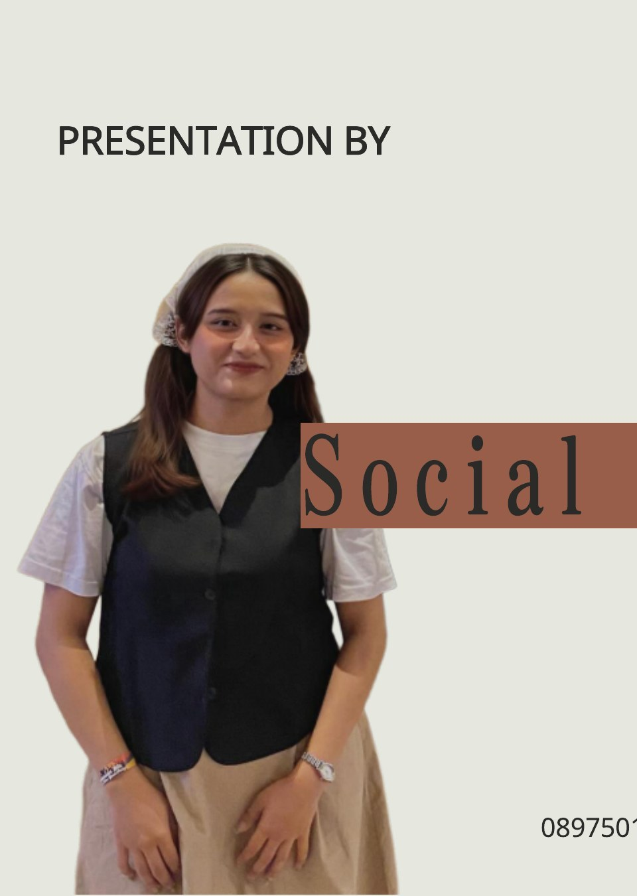
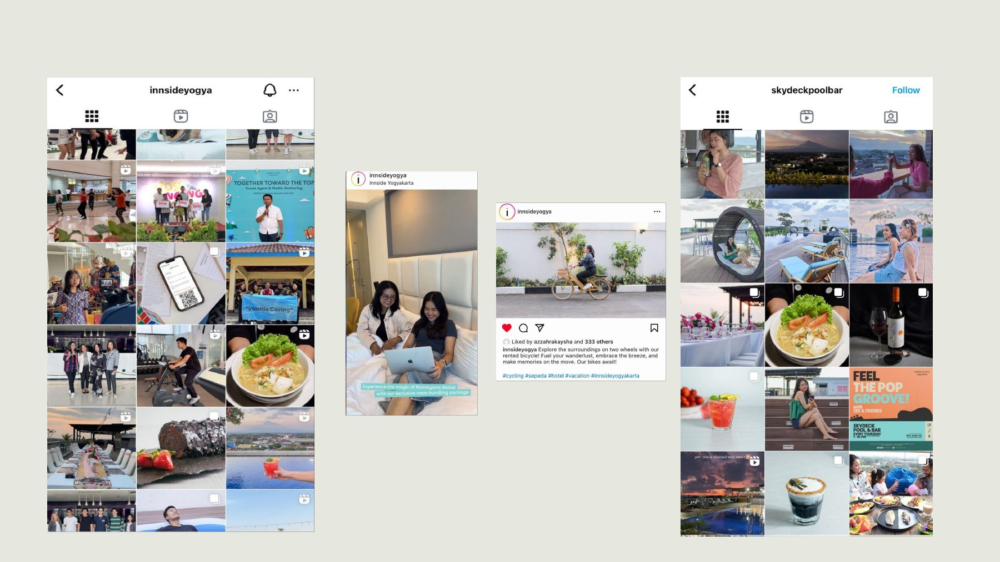
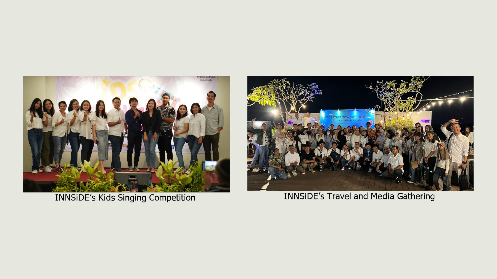
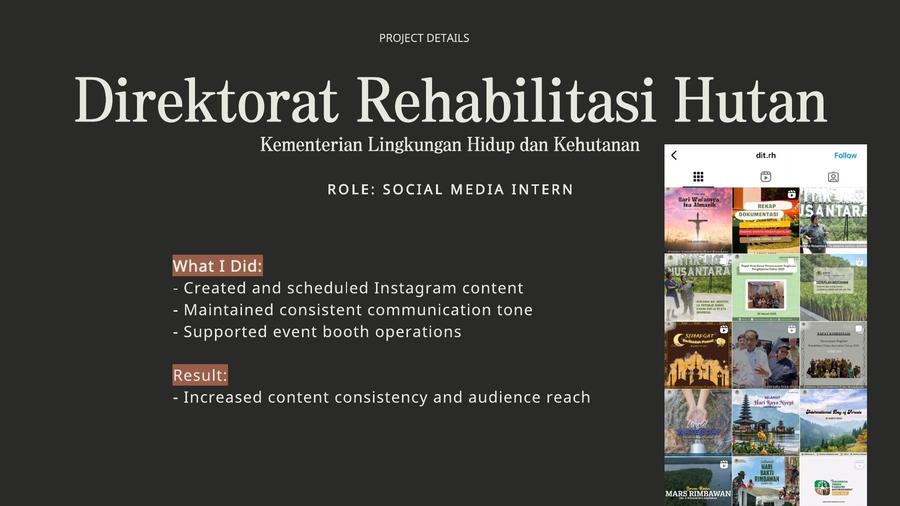
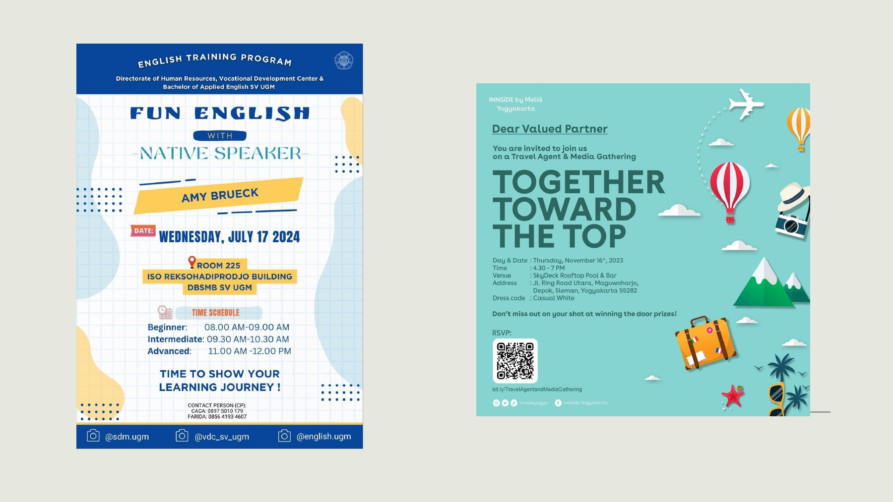
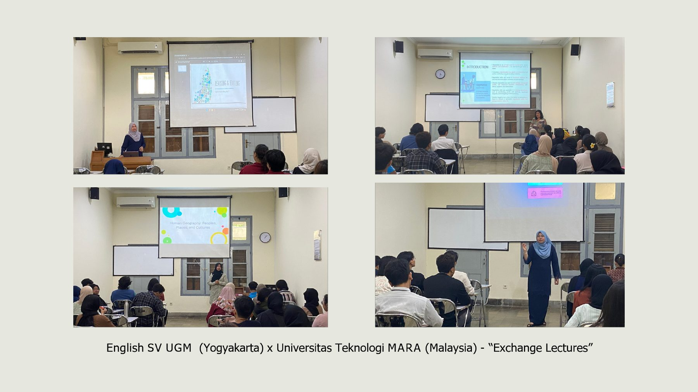
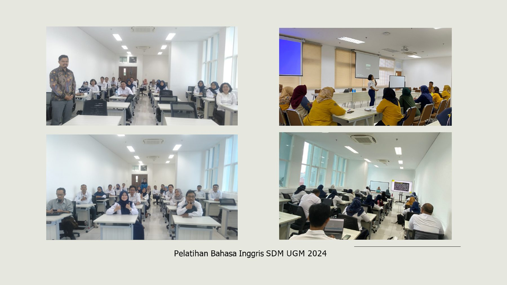

Present
Social Media Specialist
Stuja Di Danau
Leading content planning, copywriting, publishing, production, community engagement, and performance-informed improvements for Instagram and TikTok.
Social Media · Marketing Communication · Bali
I turn brand ideas into clear stories, engaging content, and memorable audience experiences.
View work↓
A detail-oriented marketing communication graduate with hands-on experience across social media management, content moderation, and event execution.
With a Bachelor of Applied English from Universitas Gadjah Mada and experience spanning hospitality, digital platforms, government communication, and education, I bring structure and creativity to every project—from the first content idea to the final report.
What I bring
A path shaped by digital content, audience care, and hands-on program delivery.
Stuja Di Danau
Leading content planning, copywriting, publishing, production, community engagement, and performance-informed improvements for Instagram and TikTok.
Gear Inc. Bali
Reviewed high-volume short-form content, applied platform policies consistently, and collaborated across teams on safety, complaints, and copyright cases.
INNSiDE by Meliá Yogyakarta
Created social content and daily promotions while coordinating event concepts, partners, documentation, and reporting for hotel campaigns.
Direktorat Rehabilitasi Hutan, KLHK
Produced and scheduled content, maintained a consistent communication tone, and supported operations at a national exhibition.
Harian Jogja · Vocational College UGM
Managed editorial archives, supported laboratory sessions, coordinated academic partnerships, and documented international and staff training programs.
Education
Vocational College, Universitas Gadjah Mada · GPA 3.70 / 4.00
Applied English through workplace communication, creative content, cultural exchange, translation, digital marketing, and media literacy.
Credentials
Highlights from social media, events, visual content, and communication programs.






Available for opportunities